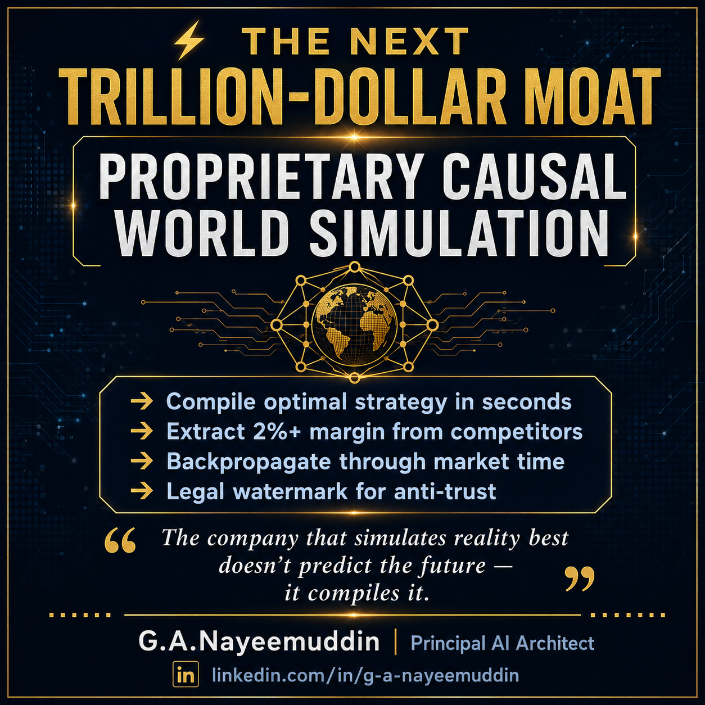

Causal World Simulation.
G-NeMa simulation intelligence for causal reasoning, scenario modeling and strategic decision support across complex, interconnected systems.

Model decisions before acting in the real world.
The product concept combines causal reasoning, scenario simulation and strategic evaluation to help teams explore possible outcomes under different decisions, assumptions and interventions.
Simulate. Compare. Decide.
A decision-support approach for reasoning about interconnected variables, interventions and possible outcomes rather than relying only on a single forecast.
Causal Models
Represent relationships between variables, actions and potential outcomes to make assumptions explicit.
Scenario Engine
Explore alternative strategies and compare simulated consequences under different assumptions.
Intervention Analysis
Study how proposed actions or changes may affect connected variables within a modeled system.
Strategic Optimization
Evaluate candidate strategies against defined objectives, constraints and modeled outcomes.
Time-Aware Reasoning
Study how decisions, dependencies and assumptions can propagate through simulated timelines.
Decision Evidence
Capture assumptions, scenarios and outputs so strategic decisions can be reviewed and challenged.
From prediction to intervention.
Forecasting asks what may happen. Causal simulation helps teams ask what could happen under different decisions, assumptions and interventions.
Simulation is not reality.
Results depend on model structure, assumptions, data quality and scenario design. G-NeMa positions simulation as decision support, with uncertainty and assumptions made explicit.